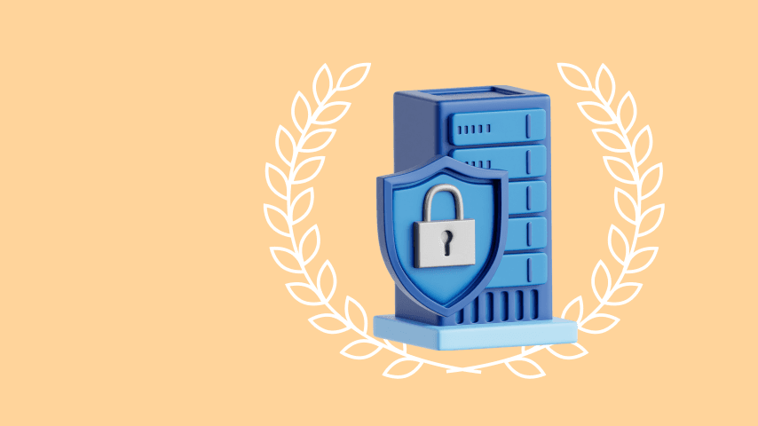
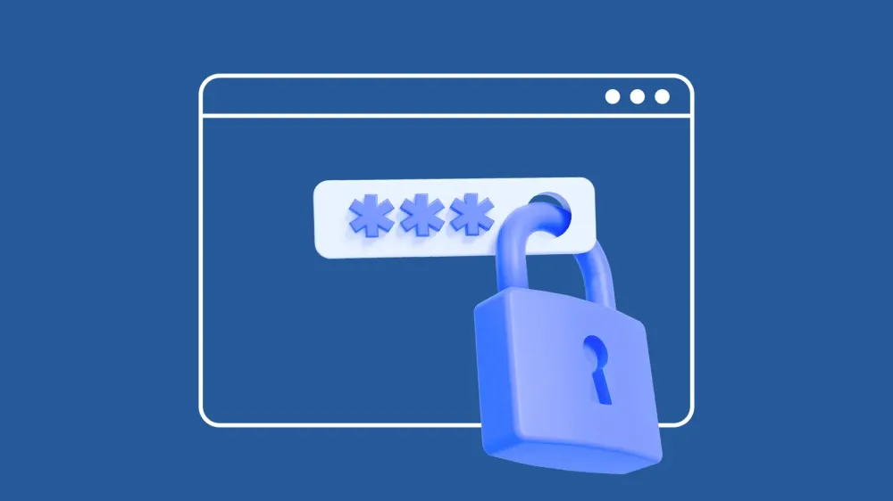

Довідкова інформація
Тут ви знайдете корисні матеріали та посилання, що допоможуть глибше зрозуміти кібербезпеку та суміжні теми.
Що таке кібербезпека?

Кібербезпека — це практика захисту комп'ютерних систем, мереж і даних від несанкціонованого доступу, атаки чи пошкодження. Вона включає широкий спектр заходів: від використання антивірусних програм до організації безпечної роботи користувачів.
Основні поради для користувачів

- Використовуйте складні паролі і змінюйте їх регулярно.
- Не відкривайте підозрілі листи або вкладення.
- Оновлюйте операційну систему та програмне забезпечення.
- Активуйте двофакторну автентифікацію там, де можливо.
- Регулярно робіть резервні копії важливих даних.
Корисні ресурси
CISA
Американська агенція з кібербезпеки та безпеки інфраструктури. Офіційні новини та рекомендації.
Перейти
SANS Institute
Провідний інститут навчання кібербезпеці, сертифікації та досліджень.
Перейти
Cybrary
Онлайн-платформа для вивчення кібербезпеки та IT-навичок різних рівнів.
Перейти
Krebs on Security
Блог з актуальними новинами, аналітикою та дослідженнями у сфері безпеки.
Перейти
Часті питання (FAQ)
- Що робити, якщо мої дані були зламані?
- Негайно змініть паролі, повідомте відповідні служби підтримки, а також відслідковуйте підозрілу активність.
- Як розпізнати фішинг-лист?
- Перевіряйте адресу відправника, уникайте переходу за сумнівними посиланнями, звертайте увагу на граматичні помилки та вимоги надати конфіденційну інформацію.
- Чи потрібен мені VPN?
- VPN допомагає захистити ваше інтернет-з'єднання, особливо в публічних мережах, але не є панацеєю. Важливо використовувати його в комплексі з іншими заходами безпеки.
 Safe WEB squad
Safe WEB squad